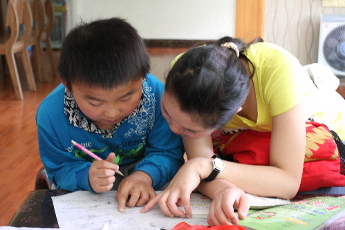

心手相牵•共享阳光
桂电志愿者网 日期：2015-05-25 来源：
2015年5月17日是第二十五次全国助残日。根据中、省团委的部署，进一步开展“心手相牵 共享阳光”阳光助残活动，南充各级团组织以全国助残日为契机，全面整合资源、创新形式，开展多种形式的阳光助残项目，关怀我市残疾人，让他们感受社会的温暖，广泛传递正能量。现将活动总结如下：
我委紧紧围绕本次“全国助残日”的主题，结合实际情况，经过周密的组织和部署，制订了活动方案，确定了本次活动的志愿服务对象，并组织动员各级团组织深入残疾人康复机构、特殊教育学校、志愿服务助残站点、社区等地开展助残活动。
团顺庆区委组织志愿者来深入社区到残疾儿童家中，与他们沟通交流，辅导他们学习，并为10名残疾儿童送去了一批幼儿读物以及玩具。
团高坪区委在活动当天采用悬挂横幅、发放宣传资料等形式，宣传《残疾人保障法》残疾人康复、残疾人劳动就业等方面的知识。活动期间，志愿者还到残疾人康复中心帮助残疾人做康复训练。
团嘉陵区委到嘉陵区火花街道办任家桥社区，慰问了5户残疾人及残疾人家属，给他们送去食用油、粽子等慰问物资，鼓励他们要勇敢面对生活，努力改善自身条件，有迫切的困难要多向社区和区级相关部门反映，并鼓励正在上学的青年努力通过学习改变命运。
团仪陇县委的志愿者们为特教校的残障儿童赠送了小礼物，教孩子们唱歌、跳舞、讲故事，陪他们一起聊天、写字、画画、做游戏，打乒乓球、羽毛球，拉近了与孩子们的距离，增强了弱势群体融入社会的自信心，让孩子们感受到志愿者们的温暖与爱护。
团蓬安县委联合蓬安县志愿者协会举行“助残日”爱心慰问捐赠筹资活动，动员全县人民都来为残疾青年儿童献一份爱心。活动当天，为300多名残疾儿童青年送去了书籍、动画光盘等100多套，并进行义卖筹集的资金都用于帮助残疾儿童，共同营造良好的人文环境。
充分利用微信群、QQ群、微博等，广泛开展扶残助残宣传教育，对“助残日”活动的开展情况进行了及时全面的宣传报道，加深了青少年群体扶残助残意识，营造社会扶残助残良好氛围。
本次活动全市参与志愿者300余名，覆盖残疾人1000余人。通过此次志愿服务活动，志愿者们以实际行动展示了志愿者青春阳光的良好形象，彰显了“奉献、友爱、互助、进步”的志愿服务精神，传递了关爱社会弱势群体的社会正能量。


【责任编辑：李想】